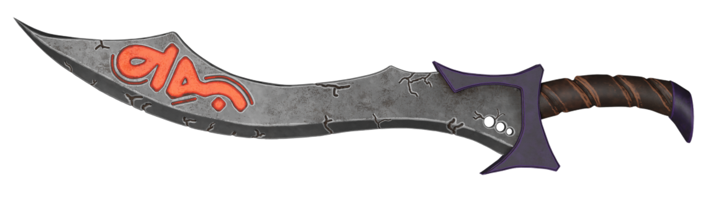

With this project, I wanted to practice my 3D modeling skills to avoid getting rusty while also trying out a new style: a combination of stylized and realistic art.
However, with every creative work I do, I try to have a story to enhance the work further and open my imagination to achieve better results!
"This Great sword was forged from the soul of Death itself! It enables the holder to kill Death and become immortal! But to achieve immortality and activate the orange shining ruin one must first finish a long and hard journey to obtain the truth about this world and the purpose of living only then shall he defeat Death."
To make the sword, first of all, I made a quick sketch in Photoshop then imported it to Blender as a reference to sculpt the high poly model and then created the low poly model from it, and finally exported it to Substance Painter to paint the textures.
In my opinion, the sword turned out amazing and the only thing I would change are the cracks which look a bit too much other than that I'm very happy with the result.
Sketch

Final Result